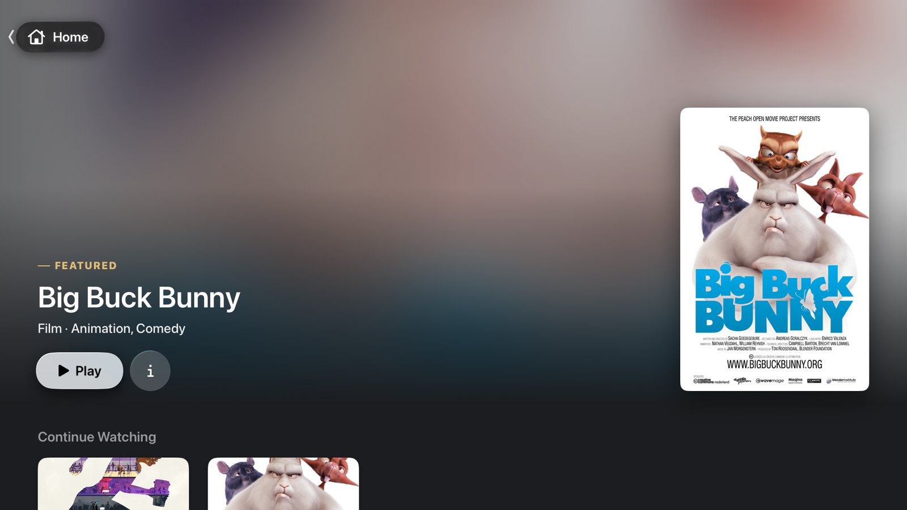
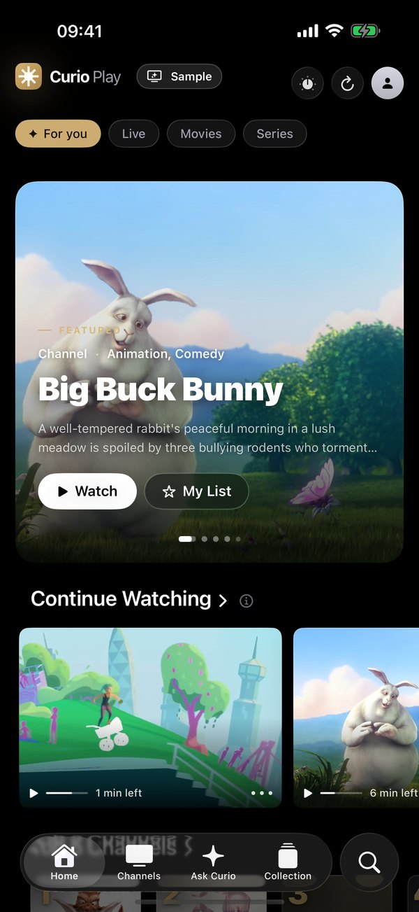
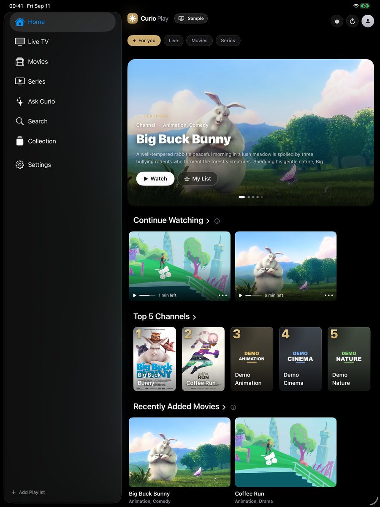
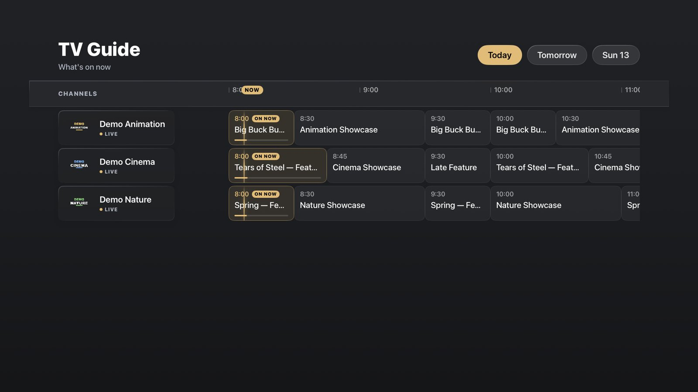
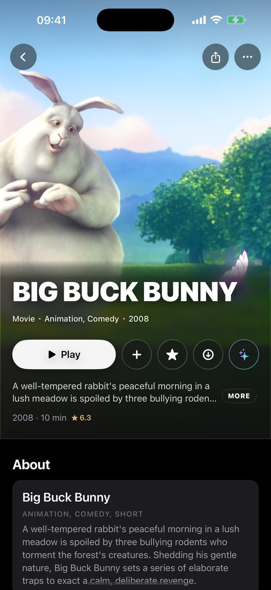
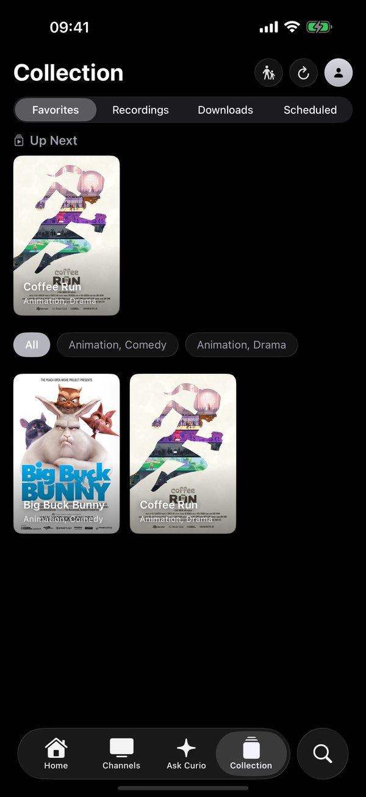
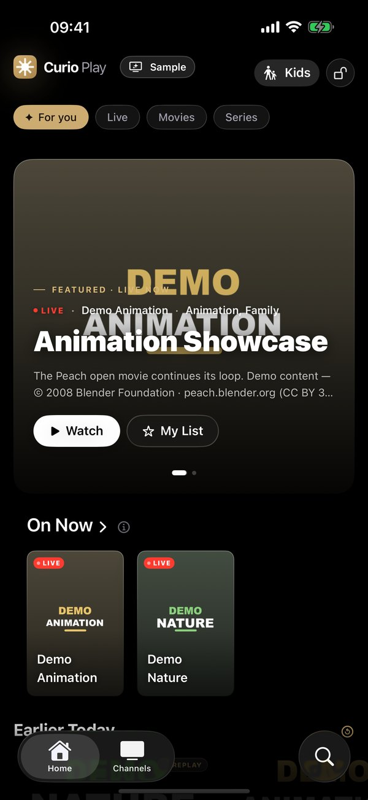
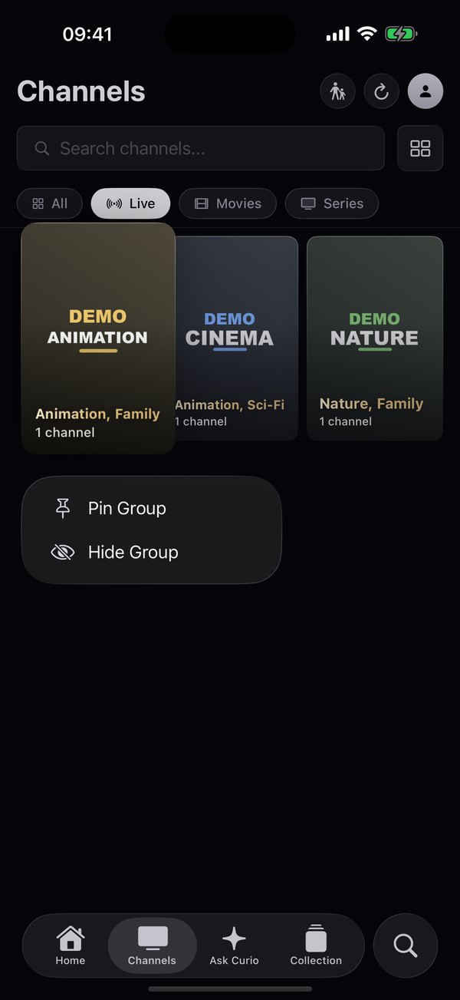
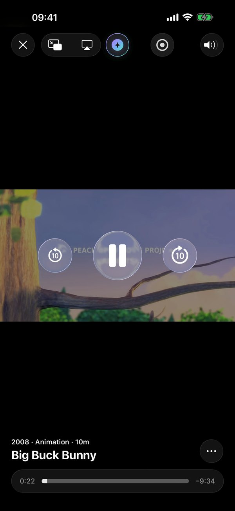

CurioPlay takes the playlist your provider gave you and turns it into a home cinema: a real TV guide with catch-up, films and series with artwork, an assistant that understands your library, and a Kids Mode you can trust.
Free with one playlist. No ads, no account, no tracking.




What's on now and next, today and the week ahead. Select a programme you missed to replay it, record what you're watching, or schedule a recording from the guide.


Posters, cast and descriptions appear without you lifting a finger. Seasons and episodes fall into order. Trending this week and "Curated for you" are picked from your own library, never from a catalogue we sell you.
"Something quiet and beautiful for tonight." Ask Curio answers from your own library, in your own words. It runs on Apple's on-device models, so what you watch never leaves your device unless you decide it should.


Choose an age preset, approve the live categories and the film genres, hand the remote over. Leaving Kids Mode needs the PIN only you know. Adult keywords stay locked behind it everywhere else, too.
Not a phone app stretched onto a TV. Each version is built for its screen and its remote, and with Pro your history, favourites and Up Next follow you through your own iCloud.
Remote-friendly layout, Top Shelf on the Home screen, recording and downloads.
A player in its own window, Picture in Picture, AirPlay to the big screen.
Sidebar, big artwork, the guide in full width.

Picture in Picture, AirPlay, SharePlay, widgets, Siri and Shortcuts.
With one playlist. No ads, no account, no tracking.
Monthly, yearly with a 7-day free trial, or once for a lifetime. One purchase covers all your Apple devices.
Try it in ten seconds: open the app and choose Explore with Sample Library. A small set of Creative Commons films lets you browse, search and play before you add anything.
No. CurioPlay is a player, like a browser is not the websites. It contains no channels, streams or content and does not help you find any. You connect the playlist your own IPTV provider gave you, and you confirm your right to it in our Terms of Use.
M3U and M3U8 playlists (link or file), Xtream Codes logins and XMLTV guides, which covers nearly every provider. Live TV, movies and series, with catch-up where your provider supports it.
The app speaks English, French and Arabic, with full right-to-left support. The App Store listing is also in German.
No account, no tracking, no ads, no analytics SDK. Your playlists and viewing stay on your device, and in your own iCloud if you turn sync on. Read the Privacy Policy; it lists every connection the app makes.
iPhone and iPad with iOS 26, Mac with macOS 26 (Apple silicon and Intel), Apple TV with tvOS 26. One purchase covers all of them.